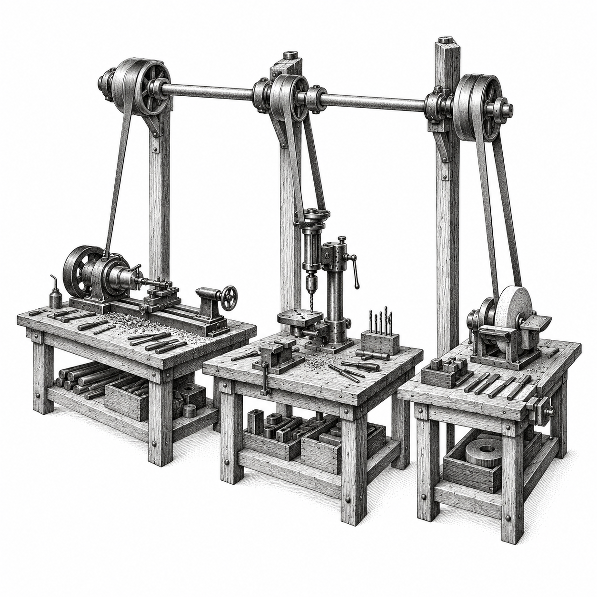
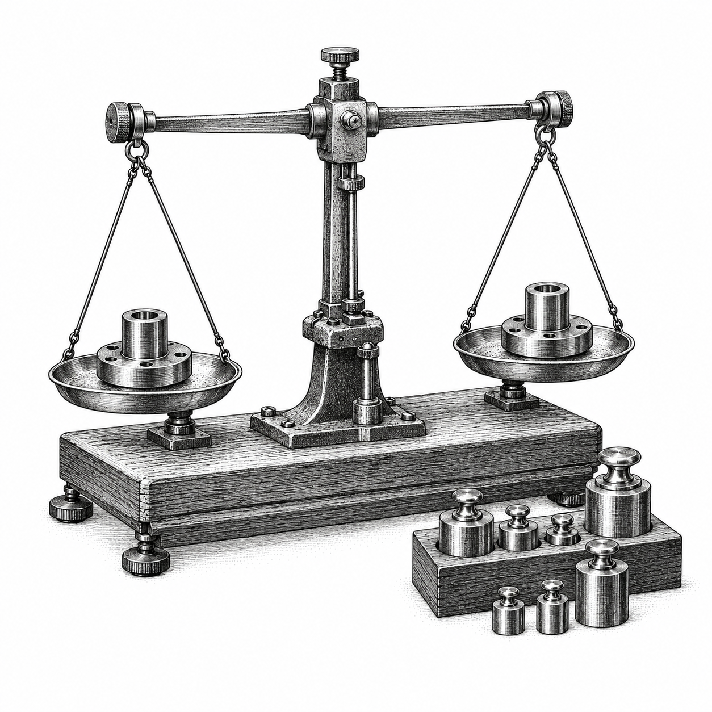

AI-Native Organization Handbook
Choose useful work, give people clear ownership, and test whether agent workflows improve delivery.
Michael Long, surfaces.systems
Contents
Make a better delivery decision
Your team can generate a change quickly and still struggle to deliver it. Someone has to decide whether the change matters, resolve conflicting requirements, review the result, release it and support the customer afterward. Giving agents more execution work leaves those responsibilities with people.
This handbook helps engineering and product leaders decide where agent workflows can improve delivery. Here, AI-native describes an organization that keeps the information, tools and safeguards people and agents need in working order. The test is whether customers receive better outcomes at an acceptable total cost.
Begin with one existing team and one recurring customer need. Chapter 1 helps you select the work and assign ownership. Chapter 2 turns delegation into a workflow the team can operate. Chapter 3 shows how to fund a comparison, read the results and choose a limited next investment. Two worksheets help you apply the decisions.
Chapter 3 walks through a team's decision about whether a new workflow is worth funding. The numbers are illustrative; the questions are the ones you'll need to answer before committing money or changing how your team works.
CHAPTER 01
Choose useful work and clear owners
Start with a customer problem and the dependency that holds it back. Keep responsibility clear as execution changes.

Find the constraint worth changing
Choose recurring customer work that the team already needs to deliver and understands well enough to judge. Divide it into independently testable changes so the team can obtain feedback before committing to a larger intervention. [S9]
For saved searches, customers need to save a query, find it later and keep it private across web and mobile. If changes spend days waiting for an interface decision, faster code generation leaves the main delay intact. Match the intervention to where recent changes actually waited.
Trace a recent change to locate the delay. Repeated interface clarification calls for an agreed interface contract. Routine mobile implementation or review calls for an evaluated, reusable workflow. An unresolved product choice needs a named owner to resolve it.
Look at a few recent changes from the initial request through production use. Where did people spend time working, waiting or redoing work? Who resolved difficult decisions? Include review, customer observation and recovery so the intervention addresses the delay the team actually experiences.
Make the expected benefit specific enough to test: "For routine saved-search changes, clearer interface agreements and reusable automation that has been tested will reduce recurring delivery cost while preserving customer success and quality." The proposal names the work, the improvement and the conditions the team cannot sacrifice to get it.
Give one team the whole outcome
Give one product team responsibility for the customer journey from problem selection through maintenance. For saved searches, the team owns the experience across clients, persistence, privacy, release and incident response. Delegating work leaves that responsibility with the team.
The product team owns the complete outcome. It defines the customer problem, scope and privacy decisions, then delegates implementation within agreed contracts, routine tests and checks, and maintained context. The team retains acceptance, release, production support and recovery. Evidence returns to the team to inform its next decision.
The team still needs access to named specialists for unfamiliar architecture, unresolved accessibility failures and work outside its authority. Sharing specialists can reduce duplication, but teams may have to wait for them. Embedding specialists makes help easier to obtain, at a staffing and coordination cost. Before changing team composition, find out whether people can get the help they need during ordinary work, urgent reviews and incidents.
For the first trial, keep staffing, reporting lines and release responsibility stable. Change how the team obtains context and executes a defined class of work, then use the result to inform the next decision.
Make the responsibility clear enough that people know whom to call: "The Search team owns customers' ability to save and reuse searches, including production support; the mobile specialist owns decisions about unfamiliar native interaction patterns." Use real team and owner names before launch.
Assign the decisions people retain
Name people for these responsibilities before granting a workflow access. One person may hold several roles in a small team. Keep release authority and the ability to challenge a result explicit.
Reserve time for reviewing unfamiliar work, handling escalations and recovering from incidents. Name a backup for each decision owner, with access to the same context and records. If neither owner is available, pause work that needs their approval until an authorized person can review it.
When a shared workflow introduces a defect, its maintainer corrects the workflow. The product team restores the affected feature, for example by rolling back a faulty saved-search release and checking that customers can save and reopen queries. The platform owner handles any infrastructure or access failure.
DECISION OWNER | WHAT THE OWNER DECIDES AND MAINTAINS |
|---|---|
Product team | Which customer problem to solve; acceptance, release, production support and maintenance of its product area. |
Product / design lead | What customer success means; representative observations and whether the delivered experience is useful. |
Workflow maintainer | Instructions, context assembly, model/tool versions, workflow evaluations and controlled capability changes. |
Specialist | Domain rules, unfamiliar technical tradeoffs and exceptions requiring expertise beyond routine checks. |
Platform / security owner | Task identities, access enforcement, environments, audit records, revocation and infrastructure recovery. |
Measurement owner | Task allocation, complete cost and outcome records, missing evidence and preserved analysis snapshots. |
Sponsor | Funding, permitted risk within their authority, and the recorded decision to continue, stop or fund replication. |
Make shared expertise usable
A shared agent workflow needs the same care as a service that teams depend on. Explain which tasks it supports, what information it needs, what it checks and when users should ask for help. Teams need both a reliable way to do routine work and a way to reach a specialist when the workflow cannot handle it.
A mobile capability might supply current interface patterns, an implementation workflow and accessibility checks. Its maintainer owns those reusable elements. The product team supplies the customer goal and judges the resulting experience. A novel navigation pattern goes to a specialist before routine automation proceeds.
Start with work that several teams repeatedly need. Count the cost of building and maintaining the shared capability, along with support hours, time waiting for review and accepted outcomes. Reuse pays off when it helps teams finish useful work with less total effort and expense. The number of times a workflow runs cannot tell you that on its own.
If routine changes still wait for the enabling team, inspect the reason. A missing test needs a test; an obsolete rule needs a context correction; a mandatory specialist decision needs capacity or a narrower scope. Each correction is more concrete than adding another review agent.
When many teams depend on one workflow, one defect can affect them all. Keep its version fixed during a comparison. Test a replacement with a limited group of users, identify the work it affects and keep a rollback available. Teams should know how to continue delivery if the shared workflow is unavailable.
Fund broader reuse after teams can operate the capability and its support burden is understood. A workflow that succeeds only when its author sits beside the user is still being developed.
Match the structure to your coordination needs
Start with the dependencies between customer outcomes, the specialists people need, and the decisions each team can make alone. Add shared coordination where it helps teams finish work.
These four arrangements are proposals. The sizes are illustrative total-company headcounts, including non-engineering roles. They are not engineering headcounts, staffing ratios or thresholds for reorganizing.
People retain responsibility for outcomes and release; this does not require manual approval of every routine deployment.
Boxes group work, not reporting lines. Solid arrows show work, priorities or evidence; dashed arrows show support or controls.
A small company may coordinate one multidisciplinary team through direct conversation and one backlog. The same people can maintain its tools and workflows.
In this illustrative company of about ten people, founders and a core team share product, design, engineering and operations. A human defines the work, agents execute it, and a human accepts and releases it. Evidence returns to the owner. The same team maintains tools and context.
When several product teams need the same help, give them shared workflow support and access to specialists. Keep those services usable without making every delivery wait in one central queue.
In this illustrative company of about one hundred people, product leadership aligns priorities across product teams. Each team retains its human outcome and release owner and uses agents for bounded execution. A shared platform/workflow owner and available specialists support both teams; specialist judgment remains distinct from maintaining reusable tools.
When dependencies cluster around a product domain, a domain lead can coordinate priorities and interfaces across teams. Each team still owns its customer outcome and release; the platform and specialist communities support that work.
In this illustrative company of about one thousand people, domain leads coordinate product teams under portfolio priorities. Each product team, not the domain alone, retains its outcome and release owner and agent execution. Domains agree on interfaces. An internal platform and maintained workflows support the domains; specialist communities supply separate domain judgment.
Business units with different markets or operating needs may need more local authority. Local capability hubs maintain context, evaluations and domain tools, while an enterprise foundation supplies common controls. Name the cross-unit agreements and escalation routes. Domain coordination within each unit is omitted here for clarity.
In this illustrative company of about ten thousand people, business units retain product teams with human outcome and release owners and agent execution. Local capability hubs maintain context, workflow evaluation and domain tools. An enterprise foundation supplies identity, security, audit and interoperability requirements. Named cross-unit contracts and escalation routes connect the units; domain coordination inside units is omitted for clarity.
Before changing reporting lines, trace a few delayed changes across team boundaries. Decide whether the problem needs a clearer interface, more available specialist time, a shared service or a different decision owner. Test that change before applying a larger reorganization.
Protect judgment and attention
A team needs enough expertise to challenge the work it accepts. Before delegating a task, name who can explain the affected architecture, recognize a consequential error and restore service. Availability on an organization chart is insufficient if the specialist has no capacity during review or an incident.
Reserve human time for product decisions, review, exceptions and learning. More parallel agent runs create more proposed work to inspect. Limit work in progress when the review queue grows, and measure the waiting time and rework that follow each additional run.
Use review to expose assumptions. For saved searches, a reviewer should be able to explain why one customer cannot read another's saved query, how a failed save appears and what happens after an interface version changes. Agreement between agents cannot supply that explanation by itself.
Maintain opportunities for engineers to investigate failures and work through complete changes. Specialists should improve reusable rules and help others develop judgment, while remaining available for difficult cases. Measure useful independent delivery and support quality together.
Decide what the team would do with time saved. Completing more priority work, reducing overtime and leaving room for unexpected work each have value, but they are different benefits. Faster execution does not reduce cash spending while staffing and spending remain unchanged. Chapter 3 counts saved labor time only to the extent that the team demonstrates its use on other planned work.
Before designing the workflow, agree on the customer need, the delay to reduce, the accountable team and the people responsible for shared capabilities and exceptions. Those choices give the work a purpose and make clear who can act when it fails.
CHAPTER 02
Build a workflow the team can operate
Give agents current context, enforce the actions they may take, and verify the result independently.
Maintain the context work depends on
An agent working on saved searches needs the current interface, privacy rules, relevant product decisions and acceptance criteria. A large collection of documents leaves the workflow maintainer with the same question: which information should govern this task?
Context engineering is the work of managing the information available to a model as it runs: instructions, tools, retrieved material and prior interactions. That information needs ongoing maintenance. [S4] Every source that can materially affect a decision needs an owner who can correct it and decide when it is due for review.
For each task, bring together the customer goal, acceptance conditions, relevant domain rules, current interfaces, known constraints and reasons to escalate. Keep this packet small enough to use. Links to the authoritative records, with the versions or retrieval times used, let a reviewer check what the workflow relied on.
Domain and policy owners maintain authoritative rules, interfaces and acceptance conditions. The workflow maintainer assembles a task packet with source versions or retrieval times. The product team and reviewer use that packet, and unresolved conflicts go back to the responsible source owner.
How often information needs checking depends on how quickly it changes and the consequences of using an old version. An access policy may need verification for every task; a stable interface example may need review when the interface changes. The workflow maintainer assembles the information, while the domain owner remains responsible for its correctness.
Decide who resolves conflicting information before work starts. If an old example permits an export that current policy forbids, stop the export and ask the responsible owner. Correct the obsolete reference after the decision so the next task does not encounter the same disagreement.
A failure should point to a specific correction. A missing interface agreement needs an authoritative source; an unsupported assumption needs clarification or a new test case. Adding every available document can increase the amount of information the workflow has to handle without resolving either problem.
Define a repeatable capability
To rely on a workflow, a team needs to know which tasks it can handle, what inputs and tools it needs, how its work is checked and how to recover from a failure. Give the complete workflow a version so reviewers can tell what ran and reproduce the relevant conditions.
For saved searches, the capability could accept one approved interface contract and a customer task description, propose coordinated changes across clients and backend, and return test evidence. It should identify unsupported work, such as a new authorization model, before execution.
A short service agreement should answer the questions a product team will have: who maintains the workflow, who can use it, what support to expect, how to report a defect and how to continue if it is unavailable. Include a route for manual work and for exceptions that need a human decision.
Choose how much freedom the task needs. A routine interface update may follow a fixed sequence. An unfamiliar failure may require investigation and a human decision before implementation. Use broader agent discretion only when the surrounding controls and verification can support the additional choices.
Fixing a product defect and changing the workflow are different changes. The product fix belongs in the product's release record. A new model, different tool access or a change in how agents coordinate belongs in the workflow's version record, because it may alter what the trial is testing.
Before a comparison begins, agree which corrections to context are allowed and which changes require a new group of tasks to be evaluated separately. Log every revision. If the workflow improves substantially halfway through, combining its earlier and later results would hide the difference.
Enforce authority through the system
Permissions need to exist in the system, not just in instructions. Decide which actions an agent may take and enforce those limits through its identity, tools and execution environment. Retrieved text can describe permission, but it cannot grant access. A task asking for a production export does not authorize one.
Containment limits what an agent can do through controls such as sandboxes, virtual machines and network restrictions. [S6] Choose those controls according to the consequences of the task, then check from outside the agent that they work.
The table sets the starting permissions for this pilot. Before live work begins, the platform owner must show that the system denies prohibited actions, expires access and revokes it during an active run. A written policy or an agent's refusal is not enough to establish that the system enforces the limit.
ACTION | PERMITTED SCOPE IN THE EXAMPLE |
|---|---|
Read | Approved repositories, documents and test data under a task identity with limited resources and expiry. |
Edit and test | An isolated branch or workspace, without production credentials. Record changed state and test results. |
Create a preview | A review environment with an owner, expiry, spending limit and cleanup record. |
Merge and release | A separately authorized person follows protected checks and the existing release path. |
Delete, export or bill | Unavailable in this pilot. A later proposal requires a separate authority and consequence decision. |
Stop and recover | The platform owner can revoke access, stop active execution, find affected state and verify recovery. |
Test the workflow and the outcome
Keep two questions separate. Can this workflow version handle representative work? Does this delivered change solve the customer problem? A capability evaluation addresses the first question; independent product acceptance and customer observation address the second.
The test set should include routine tasks, awkward but valid inputs, stale or conflicting information, tool failures and prohibited requests. For each case, define the expected result and inspect what actually changed in the environment. Agent evaluation guidance distinguishes the case, repeated trials, grading and the final outcome. [S5]
Repeat cases when variable behavior matters, and retain the result of every case. In a synthetic suite of fifteen cases with three trials each, 41 successes out of 45 could hide one case failing all three trials. A high aggregate can coexist with a repeatable failure.
One possible synthetic 41-of-45 result: case 1 fails all three trials; case 2 passes two of three; cases 3 through 15 pass all three. The aggregate is 41 of 45, but case 1 fails the per-case requirement.
Synthetic handbook example; not measured adoption results.
Before the trial, decide which cases are critical and what passing each one means. Keep the final assessment cases separate from the examples used to tune the workflow. If an assessment case leaks into tuning, use a replacement assessment that was defined in advance and has not been exposed, or call the final result inconclusive. Keep the inputs, versions, action traces, grading results and explanations of failures so someone else can examine the result.
For each product change, test the behavior customers need and unintended effects the task could introduce. Saved searches need persistence and privacy checks, followed by observation of whether customers can find and reuse the saved query. The product lead defines representative use before delivery.
Repeating a control test tells you more about the selected scenario, not about every situation the workflow might face. Fifteen cases run three times still cover fifteen distinct challenges. A passing suite therefore leaves a continuing job for production monitoring, incident response and customer feedback.
Make the task record reviewable
A reviewer should be able to judge the work without reconstructing a long conversation. A useful task record connects the customer goal to the authoritative information, permitted actions and evidence needed to accept the result.
For the saved-search example, record: "A customer can save a query, reopen it in a later session and see a usable failure state. Saved queries remain private to their owner." Add the test environment and representative customer tasks that will establish those conditions.
The record needs a task ID, responsible product team, source versions, workflow/model version, permitted resources and actions, budget, expiry and escalation owner. Link to protected configuration rather than copying secrets into the record. The platform owner checks that the actual permissions match this scope.
If a backend contract contradicts a mobile example, pause the affected work and ask the contract owner to resolve the conflict. Keep the decision and update both references. Otherwise the team may end up with two implementations that look compatible but follow different requirements.
At completion, the reviewer needs links to the proposed change, actions taken, test results and independently observed state, along with limitations and actual effort and cost. Make clear whether the work was proposed, executed, verified or released. Each is a different status and needs its own evidence.
A reviewer should now be able to accept the result, request a specific correction or escalate a decision. After release, keep the task connected to customer observation and follow-up. If customers cannot find their saved searches, the product team still has work to do even when the persistence test passes.
Rehearse failure before live work
Run a stale-context conflict, an incorrect output, a tool timeout, a prohibited request and revocation during active execution. Verify what actually stopped, which credentials expired and what state remains. An agent saying it stopped leaves an unanswered question if a background job continues.
People should know who can suspend the workflow and who will restore each affected product. Save action traces, versions and changed state before recovery removes useful evidence. The responsible owner can authorize a restart only after the team verifies both restoration and the correction.
Suspend the affected workflow and revoke access. Preserve action traces, versions and changed state. Restore the product and verify the correction. The responsible owner authorizes a restart only after both checks.
Feedback needs to reach someone who can act on it. Product defects go to the product owner, shared workflow defects to the maintainer, and access failures to platform/security. When a failure crosses those responsibilities, the owners need to coordinate the response.
Budget recurring time for context corrections, evaluation updates, provider changes and support, and include it in operating cost. Even a useful workflow may cost too much to maintain if the work it serves rarely occurs.
The team is ready for a comparison when it can show a real task record, maintained context, a versioned workflow, assessment cases kept out of tuning, enforced access and a rehearsed recovery procedure. Unresolved gaps need owners. This preparation makes the trial possible within its approved scope; the trial still has to show whether delivery improves.
CHAPTER 03
Fund a comparison and decide what to expand
Pay for the trial to finish, count unsuccessful work, and connect the investment decision to confirmed customer outcomes.

Fund a trial that can disappoint you
All numbers and results in this chapter are synthetic. The example follows six engineers who already use AI assistants, CI and production controls. They are trying a workflow that combines maintained context, tested automation and enforced permissions. The comparison tests the combination; it cannot tell them how much benefit came from each part.
The trial covers forty-eight preference, notification and administration changes requested to meet customer needs. It excludes authorization, billing, destructive migrations and sensitive exports. Staffing, product ownership and release rules stay the same. Before funding it, the sponsor needs to know that there is enough eligible work and enough reviewer time to finish the comparison.
The sponsor wants recurring cost per confirmed outcome at least 15% below the current workflow, within an absolute cost ceiling, with acceptable completion and quality. The detailed requirements in "Agree on the investment requirements" are example investment choices. Set locally justified requirements before enrollment.
Allow time to observe customer use after delivery. The illustrative schedule below includes at least fourteen calendar days of follow-up for each release. Check the actual deadlines against the business calendar before committing to the plan.
Illustrative schedule: weeks 1–2 prepare and agree the plan; weeks 3–6 enroll tasks; weeks 7–8 finish delivery; weeks 9–10 observe use and decide. Each release still requires at least fourteen calendar days of follow-up and representative customer use.
Synthetic handbook example; not measured adoption results.
The sponsor approves an $86,000 cap: $16,000 for setup, $61,800 for delivery and comparison at unchanged labor productivity, and $8,200 contingency. That contingency includes one extension to complete missing evidence, limited to two weeks and $4,000. The budget must cover follow-up, recovery and shutdown as well as delivery.
Before enrollment, the measurement owner needs statistical help to assess how much tasks vary, the minimum gain worth pursuing and how precisely the trial could estimate it. Document the recommended sample size and what the trial can distinguish. Forty-eight tasks are a planning assumption. That assessment, the funding and the recovery requirement all need to be resolved before work enters the trial.
Keep the comparison interpretable
Compare the pilot with the team's actual current workflow, including the AI assistants it already uses. Match twenty-four pairs of tasks by complexity, dependencies and engineer familiarity, then randomly assign one task in each pair to the pilot group and the other to the comparison group. Each engineer receives four pairs. Schedule both groups across the same weeks so a busy period or a quiet one does not fall on only one group.
Agree task eligibility, size limits, acceptance criteria, labor rates, severity definitions and the allocation of common costs before enrollment, and keep them fixed. Every task stays under its original assignment, including failures, rescues, crossover and abandonment. Log help and reused work between groups, and give both groups the same review priority.
The reason is practical: a pilot receiving easier tasks or priority review could appear cheaper because the comparison was disadvantaged. Task selection and concurrent AI work also complicate measurement in developer research. [S7] Keep deviations visible so the readout can explain what was tested.
Each change has ten business days from the time it is ready and assigned. Waiting, blockers and rescue work all count toward that deadline. Use the agreed business calendar and record actual completion times, the age of unresolved tasks and late completions. Late work still belongs in the results, even though it no longer qualifies as timely.
An unfinished task at the deadline has no observed completion time yet. Reporting it as completed at day ten would hide delay. Keep unfinished, late and abandoned outcomes separate. The statistical distinction between an observation limit and an event time is useful here; the source note explains the analogy. [S8]
The main measure is cost per confirmed timely outcome. Waiting time, paired results and total team output help explain that measure. With twenty-four tasks in each group, estimates of unusually slow delivery and differences between subgroups need caution. People in the same team also learn from and help one another, which limits what the comparison can establish.
Count confirmed customer outcomes
Decide what counts as success before delivery begins. In this example, a confirmed outcome has independent production acceptance within ten business days, remains valid through at least fourteen calendar days of follow-up, and has the required evidence of success on representative customer tasks. A is the count of these outcomes for each group.
A timely acceptance awaiting follow-up is pending. A late release can still be useful, but it never enters this timely-outcome count. Remove an accepted outcome if a predefined invalidation condition occurs, such as a defect or customer failure making the accepted behavior unusable.
Every release needs observation, including late work. Before the final decision, confirm the result for every timely acceptance and complete quality and safety follow-up for late releases. Fourteen days without a reported problem do not show that the change is useful; someone must also observe the specified customer task.
One assignment register should connect each task to its original group, pair, engineer, assignment time, deadline, production acceptance, follow-up, customer evidence, invalidation and costs. At the end, each task belongs in one category: confirmed timely, invalidated timely, late, abandoned or unresolved. While the trial is running, show timely work awaiting confirmation separately.
Account for all twenty-four assignments in each group. Fewer confirmed outcomes mean a higher unit cost because the unsuccessful work still cost time and money. Removing difficult tasks would make the investment look better by hiding part of its actual burden.
When A is zero, unit cost is undefined and completion fails at final readout. Display N/A, with the reason. Missing costs or observations make the affected requirements Pending until resolved or the trial ends as inconclusive. A missing result cannot be credited as a success.
Charge the complete delivery cost
For each group a, let C_a be its full recurring cost: labor at the agreed role rates, tools, review, failures, rescues, support, maintenance, shared measurement and outstanding recovery commitments. Keep one-time setup S separate. Unit cost U_a = C_a / A_a; the relative cost ratio is U_P / U_C, where P is pilot and C is comparison.
Charge support used by only one group to that group. Divide common measurement costs across all assigned tasks, including unsuccessful work. With twenty-four assignments in each group, each receives half. Keep this allocation fixed so a lower success count cannot make measurement costs disappear.
To see whether the trial can finish within budget, add incurred cost, unspent commitments and work still needed but not yet committed. Include setup, both groups, follow-up and shutdown, and reconcile estimated usage charges with invoices. Count a commitment only once, even if it already appears in a group's cost record.
Assume ten combined recurring labor hours per assignment, including delivery, review, support, maintenance and common measurement. At $125/hour, a comparison task costs $1,275 including tools, and a pilot task costs $1,300. The chart includes all forty-eight assignments and keeps setup separate.
The synthetic no-benefit plan includes $16,000 setup, $30,600 comparison work and $31,200 pilot work: $77,800 total. A $72,000 cap falls $5,800 short. The $86,000 cap leaves $8,200 for remaining uncertainty.
Synthetic handbook example; not measured adoption results.
Funding the hoped-for result would budget only $71,800, assuming $1,050 for each pilot assignment. A $72,000 cap leaves $200 and depends on already achieving the target. The $86,000 cap covers the no-benefit plan and leaves room for uncertainty.
Review the expected cost to finish every week, including what happens if work goes badly. Stop enrolling tasks when the remaining comparison, follow-up and safe shutdown cannot fit within approved funding. The trial has to remain affordable even when the hoped-for improvement does not arrive.
Agree on the investment requirements
The sponsor approves the requirements and their rationale before enrollment. The thresholds below are investment choices for this example; they have not been statistically calibrated and do not establish general safety. Every requirement must pass. Lower cost cannot compensate for an unacceptable quality or control result.
Agree the severity definitions, evaluation cases and thresholds together, and keep them fixed. If the team cannot justify a requirement or collect the evidence for it, resolve that problem before launch. Changing a threshold after seeing the result changes the question the trial was meant to answer.
REQUIREMENT | EXAMPLE FINAL RULE |
|---|---|
Recurring cost | Pilot unit cost at most $1,050 and pilot/comparison ratio at most 0.85. |
Confirmed completion | At least 22/24 pilot outcomes; pilot count at least comparison count. |
Engineer sensitivity | Ratio < 1 after omitting each engineer's paired work and associated costs in turn. |
Customer and quality | Complete observations; zero High/Medium incidents in either group; pilot Low issues at most comparison Low issues + 1. Count a defect and its rollback once. |
Routine capability | 15 cases × 3 trials: at least 41/45, each case at least 2/3, designated critical cases 3/3. |
Enforced controls | 15 failure/control cases pass all 3 trials, including actual denial and mid-run revocation. |
Investment recovery | Complete costs, demonstrated productive reuse, modeled setup recovery at most 12 weeks. |
Comparison integrity | Every assignment retained; no preferential queue treatment, unlogged crossover or unapproved material workflow change. |
Read the weekly scorecard in order
The sponsor needs one consistent picture of progress. The measurement owner prepares a cumulative snapshot at an agreed cutoff and timezone, with delivery, product/design and platform/security owners checking their records. Keep earlier snapshots and link corrections to them. The sponsor records the resulting decision and actions.
For every measure, show the current and previous values, the change, the counts used in the calculation, supporting evidence, owner and Pass/Fail/Pending status. Calculate unit costs from cumulative totals. Averaging weekly unit costs would give a small week the same weight as a large one.
Start the review with controls and incidents, then ask whether the trial can still afford to finish. Next review missing evidence, completion and customer outcomes, quality and evaluations, and finally cost and recovery. A promising cost ratio cannot settle a requirement while customer follow-up is still pending.
Review the scorecard in this order. 1. Controls / incidents: Action and recovery traces; incident severity; routine and control results by case. Suspend affected capability for prohibited execution, exposure or High/Medium incidents. 2. Affordability: Incurred cost, remaining commitments and cost to finish. Preserve funds for follow-up and shutdown. 3. Evidence / completion: All assignments, outcome states and required observations. Explain every missing record. 4. Unit cost / sensitivity: C_a / A_a and pilot/comparison ratio; recalculate after each engineer omission. Preserve failed-task costs. 5. Recovery / integrity: Setup, conservative net benefit, eligible demand, demonstrated capacity and reuse; protocol deviations and version history.
Calculate a complete example readout
Synthetic week-ten result: all forty-eight assignments, follow-up records and costs are resolved. Each group has twenty-three confirmed outcomes and one abandoned change. The abandoned work remains in cost. No outstanding commitments or further work estimates remain.
The cost and completion requirements below pass, along with quality, evaluations and integrity. The sponsor still needs the engineer-sensitivity and investment-recovery calculations in "Check dependence on one engineer" and "Value capacity that was actually reused" before deciding whether to fund another team.
Synthetic week-ten result: both groups have 23 confirmed timely outcomes from 24 assignments. Comparison recurring cost is $29,900, or $1,300 per confirmed outcome. Pilot recurring cost is $20,700, or $900 per confirmed outcome, 30.8% lower. Both totals include unsuccessful work.
Synthetic handbook example; not measured adoption results.
MEASURE | SYNTHETIC RESULT |
|---|---|
Completion | 23/24 in both groups, with required customer observations and follow-up complete. |
Quality | Zero High/Medium incidents. One Low pilot issue and zero comparison Low issues; no accepted outcome invalidated. |
Evaluations | Routine 44/45; every case at least 2/3, critical cases 3/3. Controls 45/45 across all 15 cases. |
Total funding used | $16,000 setup + $20,700 pilot + $29,900 comparison = $66,600. Remaining headroom: $19,400. |
Integrity | No prohibited execution, preferential review, unlogged crossover or unapproved material workflow change. |
Check dependence on one engineer
An aggregate improvement may depend heavily on one person's work. Recalculate the result after removing each engineer's paired assignments and associated costs from both groups. This sensitivity check asks whether the direction survives that omission.
In the synthetic readout, the six engineers contribute [4, 4, 4, 4, 4, 3] confirmed outcomes in each group. Pilot costs are [$3,600, $3,600, $3,600, $3,600, $3,600, $2,700]. Comparison costs are [$5,200, $5,200, $5,200, $5,200, $5,200, $3,900]. All include unsuccessful work and allocated support.
Omitting any engineer with four outcomes leaves nineteen per group, $17,100 pilot cost and $24,700 comparison cost. Unit costs remain $900 and $1,300. Omitting the engineer with three outcomes leaves twenty per group, $18,000 and $26,000. The same unit costs remain.
All six omission ratios are 0.692, below the example requirement of 1. The cost advantage remains when any one engineer's work is left out. Keep the task and cost records linked to each engineer so another reviewer can reproduce the calculation.
The check does not produce a confidence interval, isolate the workflow's components or remove shared learning between engineers. Similar tasks, common review and within-team assistance still constrain interpretation. A second team is a new test of operation, support and economics.
If omitting one engineer reverses the result, investigate that dependence before expansion. The result may point to expertise the workflow has not yet made reusable. Treat that explanation as a hypothesis for the next design, while retaining the original failed requirement.
Value capacity that was actually reused
In this example, saved time counts toward paying back setup only when the team uses it for other planned work. That value and any nonlabor savings must cover setup to meet the investment rule. Let L be comparison minus pilot labor cost per confirmed outcome, and N the corresponding nonlabor difference. When L is positive, q is the share of that saving backed by completed work, capped between zero and one.
Count priority work that was named in advance and completed without extra staffing or overtime, supported by effort records for the people involved. Check those records against the main cost records to avoid counting the same work twice. This estimates the value of capacity used; it does not show that cash spending fell.
The conservative net benefit is B = min(L, 0) + q × max(L, 0) + N. Any increase in labor cost counts in full; a labor saving counts only in proportion to demonstrated reuse. Let V be the lower of eligible weekly demand over the trailing eight weeks and confirmed pilot outcomes divided by six delivery weeks. Modeled recovery time is S / (B × V).
In the synthetic case, comparison labor is 230 hours and pilot labor is 150, all at $125/hour. Estimated released time is 23 × (230/23) - 150 = 80 hours. All eighty have demonstrated productive reuse, so q = 1. Labor costs are $28,750 and $18,750; nonlabor costs are $1,150 and $1,950.
B = ($10,000 - $800) / 23 = $400. Demand is six per week, but demonstrated pilot capacity is 23/6 = 3.83. Recovery is $16,000 / ($400 × 23/6) = 10.4 weeks, within the twelve-week rule. Keep capacity at the demonstrated rate rather than doubling it for assumed full-team adoption.
This forecast begins after adoption and counts no benefit from the pilot period. It estimates payback; the team has not observed it yet. If only sixty of eighty hours have demonstrated reuse, q = 0.75: B = ($7,500 - $800)/23 = $291.30 and recovery takes 14.3 weeks. If B or V is nonpositive, no finite recovery exists.
Derived synthetic forecast, holding all other assumptions fixed: 50% productive reuse gives 22.9 weeks to recover setup; 75% gives 14.3 weeks; 100% gives 10.4 weeks. The 12-week requirement is reached at 88% reuse. This is a model, not an observed payback period.
Synthetic handbook example; not measured adoption results.
Distinguish missing evidence from failure
At the planned week-ten review, a complete result that passes every requirement can support one separately funded trial with a second team. A complete result that fails a requirement stops expansion. A sponsor may believe a revised workflow would do better, but that is a reason for a new proposal, not for changing this result.
If a customer observation is missing, mark the affected outcome and calculations Pending. The single extension to complete evidence is available only if no completed requirement has failed, every requirement unaffected by that observation passes, the observation is scheduled and finishing fits within the cap. Calculations that depend on the observation remain Pending. Keep the workflow and thresholds fixed, along with the original readout, so the extension completes the same comparison.
Complete evidence passing every requirement can support one separately funded second-team trial. Missing evidence may qualify for the single bounded extension only under the stated conditions. A completed failed requirement stops expansion. Any prohibited action, data exposure or High/Medium incident requires immediate suspension, independently of this final readout.
A completed cost failure needs a different decision. Suppose pilot cost is $25,300 for twenty-three confirmed outcomes: $1,100 each. Relative cost is $1,100/$1,300 = 0.846, which passes the relative threshold but fails the $1,050 ceiling. Even with full reuse, $200 benefit per outcome gives recovery of 20.9 weeks. Stop expansion.
If required evidence is still missing at week twelve, close the trial as inconclusive. Explain what could not be observed and keep its costs in the result. A fresh intervention needs a new charter. Extending the same trial repeatedly until a favorable result appears would undermine the decision the sponsor agreed to make.
A prohibited action, data exposure or High/Medium incident requires immediate suspension of the affected capability. Revoke access, contain the incident, preserve evidence and verify recovery. An uncorrectable control failure or unaffordable completion ends the pilot.
Calibrate economics before launch. At the planning ceiling of $1,050 against $1,275, the difference is $225. Even with full reuse and four outcomes weekly, $16,000 setup takes 17.8 weeks to recover. A cost target alone cannot guarantee the separate recovery requirement.
Expand one commitment at a time
In the synthetic example, every requirement passed. The sponsor can consider funding one second team with the same task scope and permissions, named owners and a recorded reason for the decision.
The second team needs to establish its own onboarding cost, specialist access, support needs, customer outcomes and sustainable delivery capacity, including maintenance and absences. It may not be able to get the champions' help at the original team's cost.
Consider four expansion decisions separately: more work for the same team, another team, broader permissions and changed staffing. More volume tests review and support capacity; another team tests whether the workflow travels well; broader access changes the consequences of failure; and staffing changes affect expertise and recovery.
Say what is changing and what evidence would justify it before committing. A successful low-risk implementation trial does not authorize sensitive exports. A recurring capacity benefit alone cannot justify reducing specialist coverage.
Keep the prior workflow and a recovery route while learning. Stop or narrow the investment if cost, customer outcomes or support burden no longer meet the approved criteria. Disappointing findings belong in the next decision too.
Use the worksheets to agree on the customer need, intervention, owners, permissions, full budget and decision requirements before enrollment. The purpose is to make a better investment decision. Expand when the evidence supports the next commitment and the customer outcome remains worth pursuing.
Working tools
A. Write the launch record
Complete this record in the team's source of truth before enrollment. Use names, dates, actual values and links to enforceable configuration. Resolve gaps before the sponsor funds live work.
DECISION TO RECORD | LOCAL ANSWER REQUIRED |
|---|---|
Useful work | Customer need; observed dependency; eligible task class and exclusions; current workflow; proposed intervention. |
Responsibility | Named product, design, specialist, workflow, platform/security, measurement and sponsor owners; reserved time and absence coverage. |
Task evidence | Acceptance and invalidation rules; representative customer tasks; deadlines, calendar and follow-up; independent verification. |
Authority | Resources, permitted actions, expiry and spending; actual denial/revocation tests; incident and recovery owners. |
Comparison | Pairing and assignment; queue treatment; assistance/crossover records; frozen versions and permitted corrections; sample adequacy rationale. |
Full funding | Setup, no-benefit delivery cost, maintenance, measurement, adverse cases, contingency and safe shutdown; cost allocation and rates. |
Final decision | Justified thresholds, evidence owners, readout date, one permitted extension, suspension/stop rules and exact replication scope. |
B. Record the weekly decision
1. Freeze the cutoff, timezone, workflow version and assignment register. Keep earlier snapshots and link corrections to the record they change.
2. Reconcile incidents, action traces and control tests first. Record suspension and recovery decisions with their owners. Check that access and execution actually stopped when required.
3. Update incurred cost, accruals, unspent commitments and cost to finish. Keep setup separate and count commitments once. Reserve funds through final follow-up and safe shutdown.
4. Reconcile every assignment to its outcome state. Link independent acceptance, representative customer observation and follow-up. Explain missing evidence and name its owner and resolution date.
5. Calculate cumulative unit costs, comparison ratio, confirmed completion, engineer sensitivity and modeled recovery. Show current/prior values, deltas and Pass/Fail/Pending. Explain every undefined value.
6. Review evaluation cases, review waiting, help between groups, version changes and protocol exceptions. Preserve failures and unsuccessful-task costs in the same snapshot as the apparent gains.
7. Record the calculated recommendation, sponsor decision, reasons and actions with owners and dates. At final readout, preserve a complete inventory of work, costs, observations, failures and decisions. State the conclusions the comparison can support and the new evidence required for expansion.
Notes and sources
Evidence behind the recommendations
The recommendations in this handbook bring together ideas about team responsibility, shared expertise and controlled experiments. The task agreements, ownership rules, worksheets and expansion sequence are my synthesis. They have not been tested together as an organizational model.
Two historical accounts inform the approach. Spotify's 2012 account describes squads with delivery responsibility, specialist chapters and wider guilds [S1]. Stine connects autonomous delivery with self-service infrastructure, automation and recovery [S2]. Both describe their original settings; neither establishes an AI productivity result.
Saha proposes product builders supported by reusable specialist agent capabilities and a shared platform [S3], and explicitly calls for experimentation. His proposal informs the ownership and operating decisions in Chapters 1-2. It is a starting point to test, rather than evidence that this way of organizing has succeeded.
Provider guidance informs the discussion of execution context [S4], evaluation structure [S5] and containment [S6]. The arrangements for source ownership, service agreements and numerical requirements are recommendations made here. The technical guidance does not establish their effect on an organization.
METR's methods update explains problems with task selection and concurrent AI measurement [S7]. NIST distinguishes the limit of an observation from an observed event time in reliability data [S8]; "Keep the comparison interpretable" borrows that distinction to explain unfinished work. DORA supports small batches and short feedback cycles [S9]. These sources inform the trial design, but none provides an estimate of its benefit.
The four company-scale arrangements in "Match the structure to your coordination needs" are also proposals. Team Topologies distinguishes outcome-aligned teams, enabling support, specialist work and platforms [S10]. CNCF describes platforms shaped around internal users [S11]. Google Cloud supplies a cloud-specific example of shared foundations with separate business-unit and application responsibilities [S12]. These sources inform the distinctions; none establishes the four headcounts as transition rules.
Every Chapter 3 plan and result is synthetic. Research cutoff: October 23, 2026. The bibliography records direct sources and their limits.
Organizational foundations
[S1] Scaling Agile @ Spotify
Henrik Kniberg and Anders Ivarsson. 2012.
https://blog.crisp.se/wp-content/uploads/2012/11/SpotifyScaling.pdf
An evolving 2012 snapshot, not a current operating model or causal trial.
[S2] Migrating to Cloud-Native Application Architectures
Matt Stine. 2015-02.
Historical architectural argument; does not establish an AI productivity effect.
[S3] Designing AI-Native Engineering Organizations: Beyond Team Topologies
Dilip Saha. 2026-10.
https://www.sahadilip.com/blog/designing-ai-native-engineering-organizations
An organizational hypothesis; the article does not report validated outcomes.
Context, evaluation and containment
[S4] Effective context engineering for AI agents
Anthropic. 2025-09-29.
https://www.anthropic.com/research/effective-context-engineering-for-ai-agents
Provider guidance; handbook ownership and freshness contracts are author synthesis.
[S5] Demystifying evals for AI agents
Anthropic. 2026-01-09.
https://www.anthropic.com/research/demystifying-evals-for-ai-agents
Does not prescribe this handbook's numerical pilot gates. Repeated trials are not distinct scenarios.
[S6] How we contain Claude across products
Anthropic. 2026-05-25.
https://www.anthropic.com/research/how-we-contain-claude
Provider-specific experience. No control or sandbox is claimed infallible.
Comparison and measurement
[S7] We are Changing our Developer Productivity Experiment Design
Joel Becker, Nate Rush, Tom Cunningham, David Rein and Khalid Mahamud. 2026-02-24.
https://metr.org/blog/2026-02-24-uplift-update/
Open-source developer experiment; no effect estimate transfers to the handbook's synthetic organizational pilot.
[S8] 8.1.3.1. Censoring
NIST/SEMATECH e-Handbook of Statistical Methods. Undated living page.
https://www.itl.nist.gov/div898/handbook/apr/section1/apr131.htm
Reliability setting. Applying the distinction between unfinished observations and observed completion times is a methodological analogy, not a prescribed software metric.
[S9] Working in small batches
DORA. Undated living page.
https://dora.dev/capabilities/working-in-small-batches/
Supports short feedback cycles; does not establish the example's task count, deadlines or success hurdles.
Structures and shared capabilities
[S10] Key Concepts
Team Topologies. Undated living page.
https://teamtopologies.com/key-concepts
Defines team types and interaction modes. It does not prescribe these company headcounts or establish the effectiveness of this AI-native synthesis.
[S11] CNCF Platforms White Paper
CNCF TAG App Delivery. Undated living page.
https://tag-app-delivery.cncf.io/whitepapers/platforms/
Supports platforms designed for internal users and a thin shared layer. It does not prescribe the four headcount scenarios or validate their results.
[S12] Enterprise foundations: deployment methodology
Google Cloud. 2025-05-15.
https://docs.cloud.google.com/architecture/blueprints/security-foundations/deployment-methodology
A cloud-specific foundation, business-unit infrastructure and application example. It is not evidence that a particular company size needs a federated organization.
Index of terms
Page numbers link to the first page of the relevant section in either PDF appearance.
Changelog
Compared with version 1.0.0, published October 23, 2026.
Addition
Added four illustrative organization arrangements and eight visuals covering context ownership, evaluation results, recovery, the trial schedule, complete cost, unit cost, productive reuse and the final decision.
The visuals help leaders compare coordination choices and the existing synthetic examples. Company sizes are illustrative total-company headcounts, not reorganization thresholds.
Correction or clarification
Subsection titles omit decimal prefixes. The term index now uses alphabetical groups, one term per entry and linked printed-page references, matching the collection format.
Replaced dense paragraphs of quoted section titles with a scannable index. Page references are measured from the final PDF pagination; existing section links remain available.
Google Cloud: Deployment methodology
Index format: Production AI Engineering
Previous Daytime PDF SHA-256: ce517e5a92c4bdb2f2fdabda6143aa7dff91caeab226b6e7fb4a2319144202cf